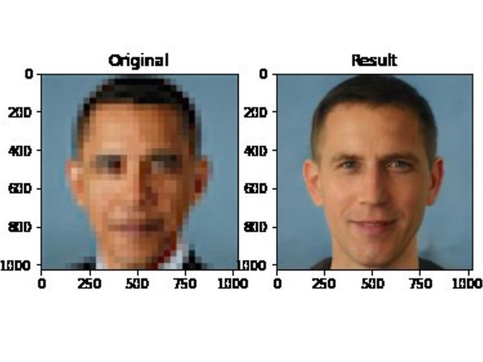
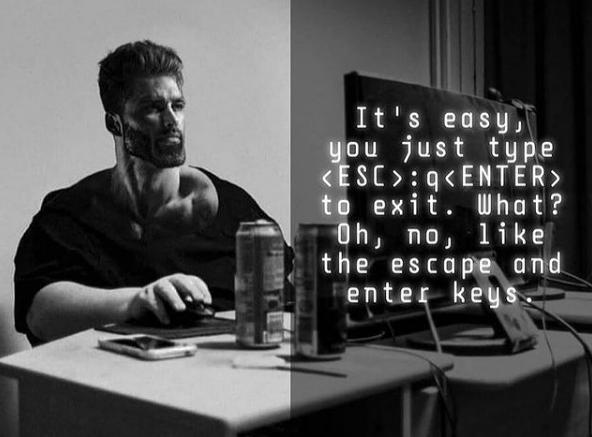

Humor



From: patl@athena.mit.edu (Patrick J. LoPresti) Subject: The True Path (long) Date: 11 Jul 91 03:17:31 GMT Newsgroups: alt.religion.emacs,alt.slack
When I log into my Xenix system with my 110 baud teletype, both vi and Emacs are just too damn slow. They print useless messages like, ’C-h for help’ and ’“foo” File is read only’. So I use the editor that doesn’t waste my VALUABLE time.
Ed, man! !man ed
ED(1) UNIX Programmer’s Manual ED(1)
NAME ed - text editor
SYNOPSIS ed [ - ] [ -x ] [ name ] DESCRIPTION Ed is the standard text editor. —
Computer Scientists love ed, not just because it comes first alphabetically, but because it’s the standard. Everyone else loves ed because it’s ED!
“Ed is the standard text editor.”
And ed doesn’t waste space on my Timex Sinclair. Just look:
-rwxr-xr-x 1 root 24 Oct 29 1929 /bin/ed -rwxr-xr-t 4 root 1310720 Jan 1 1970 /usr/ucb/vi -rwxr-xr-x 1 root 5.89824e37 Oct 22 1990 /usr/bin/emacs
Of course, on the system I administrate, vi is symlinked to ed. Emacs has been replaced by a shell script which 1) Generates a syslog message at level
LOG_EMERG; 2) reduces the user’s disk quota by 100K; and 3) RUNS ED!!!!!!“Ed is the standard text editor.”
Let’s look at a typical novice’s session with the mighty ed:
golem> ed
? help ? ? ? quit ? exit ? bye ? hello? ? eat flaming death ? ^C ? ^C ? ^D ?
— Note the consistent user interface and error reportage. Ed is generous enough to flag errors, yet prudent enough not to overwhelm the novice with verbosity.
“Ed is the standard text editor.”
Ed, the greatest WYGIWYG editor of all.
ED IS THE TRUE PATH TO NIRVANA! ED HAS BEEN THE CHOICE OF EDUCATED AND IGNORANT ALIKE FOR CENTURIES! ED WILL NOT CORRUPT YOUR PRECIOUS BODILY FLUIDS!! ED IS THE STANDARD TEXT EDITOR! ED MAKES THE SUN SHINE AND THE BIRDS SING AND THE GRASS GREEN!!
When I use an editor, I don’t want eight extra KILOBYTES of worthless help screens and cursor positioning code! I just want an EDitor!! Not a “viitor”. Not a “emacsitor”. Those aren’t even WORDS!!!! ED! ED! ED IS THE STANDARD!!!
TEXT EDITOR.
When IBM, in its ever-present omnipotence, needed to base their “edlin” on a UNIX standard, did they mimic vi? No. Emacs? Surely you jest. They chose the most karmic editor of all. The standard.
Ed is for those who can remember what they are working on. If you are an idiot, you should use Emacs. If you are an Emacs, you should not be vi. If you use ED, you are on THE PATH TO REDEMPTION. THE SO-CALLED “VISUAL” EDITORS HAVE BEEN PLACED HERE BY ED TO TEMPT THE FAITHLESS. DO NOT GIVE IN!!! THE MIGHTY ED HAS SPOKEN!!!
?